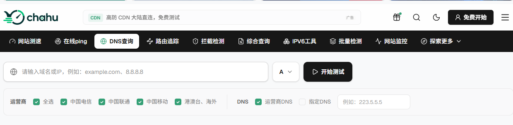
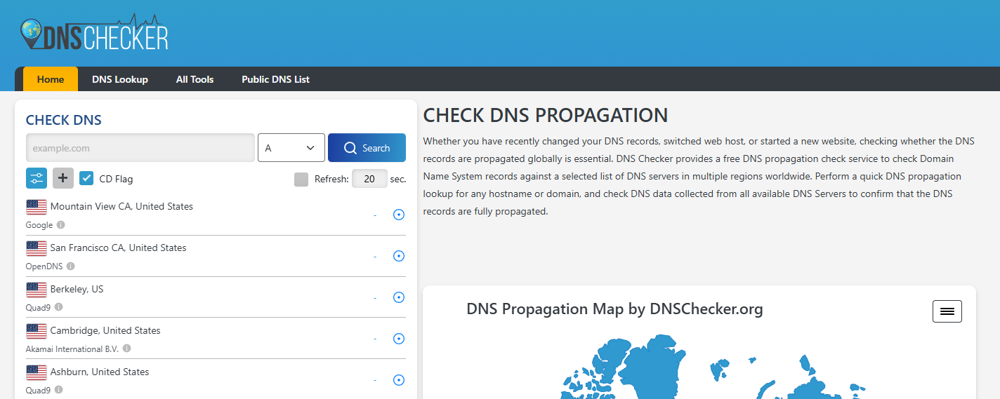
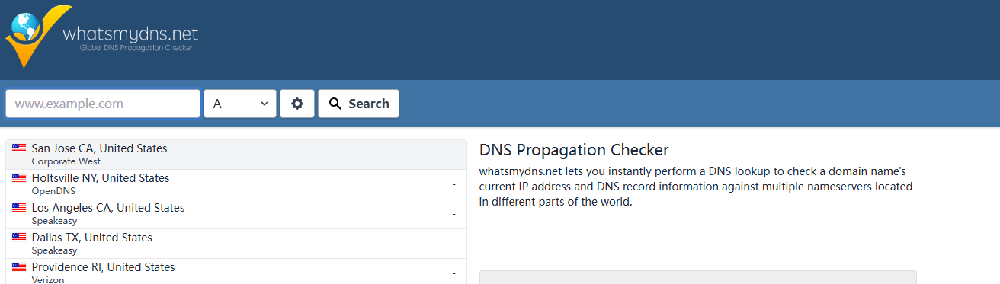
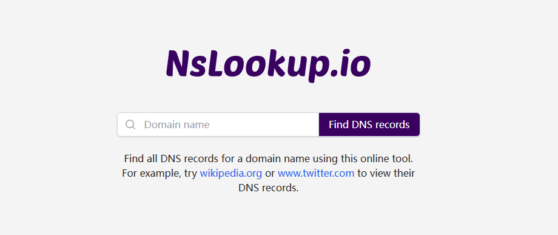
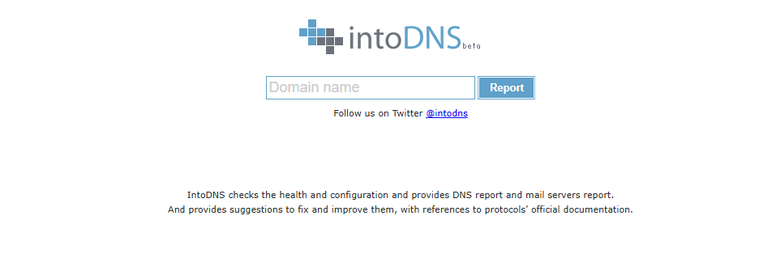
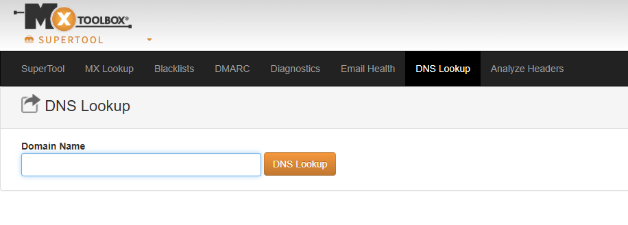

不少做网站运维或者做 SEO 的朋友都碰见过这种闹心事：刚在后台把域名改了 A 记录，或者换了一家 CDN，自己 Ping 了一下确实指向新 IP 了，但群里客户或者某些省份的网友却一直在叫苦，说网站打不开、报 SSL 证书错误，甚至直接跳到了奇怪的页面。
这真不一定是网站服务器挂了，大概率是 DNS 缓存（TTL）导致的。你改了解析，消息还没传遍全国各地的 Local DNS（比如电信移动的本地递归服务器）。在 TTL 过期之前，大家拿到的 IP 根本就不在一个频道上。
要搞清楚到底是哪里的节点还没更新，或者是不是遭到了地方运营商的劫持污染，用在线 DNS 查询工具是最省事的。这篇文章我挑了 6 款平时排查故障时最常用的在线 DNS 工具，从国内多运营商切片到海外大盘监控，逐一拆解它们的特点和用处。
一、 为什么需要在线 DNS 查询工具？
使用专业的在线 DNS 检测工具，主要可以解决以下四大痛点：
评估解析生效进度：实时掌握域名修改后，全球或国内各省份节点的生效覆盖率。
排查区域性 DNS 污染与劫持：检查域名是否在个别地区或运营商网络下被恶意解析到错误 IP。
验证 CDN 与高防加速状态：确认不同地域的请求是否成功调度到对应的 CDN 边缘节点，而非暴露源站真实 IP。
校验复杂的 Mail 与验证记录：快速检测 MX、TXT（SPF / DKIM / DMARC）、NS 等非 A 记录的配置规范与准确性。
二、 评价一款 DNS 检测工具的核心指标
市面上的 DNS 查询工具繁多，但质量参差不齐。评估一款在线 DNS 工具是否优秀，通常看以下四个维度：
节点分布与覆盖精度：是否同时涵盖国内三大运营商（电信、联通、移动）、教育网以及海外主流洲际节点。对于国内业务而言，单看“全球节点”不够，必须看省份级别的运营商覆盖。
记录类型完备度：除了基础的 A 和 AAAA 记录，是否完整支持 CNAME、MX、TXT、NS、SOA、SRV、CAA 等深度记录。
响应速度与可视化体验：查询结果是否能在数秒内返回，是否提供地图打点、解析时延统计以及清晰的状态标识（如绿勾/红叉）。
高级诊断功能：是否包含 DNSSEC 签名校验、权威服务器 Trace 追踪、DNS 缓存主动刷新提交流程等。
三、 6款常用在线 DNS 检测工具深度实测与推荐
1. chahu DNS (茶壶测速)

如果你做的是国内业务，或者给国内用户提供加速服务，chahu几乎是必选的工具。
海外很多知名工具在国内顶多放一两个位于北京或上海的服务器节点，压根测不出二三线城市真实用户的解析情况。chahu的强项就在于它扎根国内，把全国各省份的电信、联通、移动、广电等运营商节点拆得非常细。
做 CDN 切换或者高防 IP 部署时，用它测一圈，不仅能看各地的 IP 切过去没有，还能直接看到响应延迟，甚至能帮你识别出当前 IP 属于哪家 CDN 厂商。排查“移动打不开、电信能打开”这种经典的运营商线路调度问题，它非常管用。
2. DNSChecker

搞外贸出海、做跨境电商，或者域名挂在 Cloudflare/Akamai 上的朋友，对 DNSChecker 应该很熟悉。
它在全球部署了 100 多个节点，遍布北美、欧洲、亚太和拉美。界面简单粗暴，左侧输域名选记录类型，右侧直接出全球地图和节点列表。它有个很人性化的功能：你可以填入你的“预期 IP”，工具会自动帮你对比，对上的打绿勾，没对上的打红叉，全球生效进度一目了然。
3. WhatsMyDNS

WhatsMyDNS 属于老牌轻量级工具，最大的特点就是快、干净、不花哨。
有时候只是临时想看一下某条 CNAME 记录或者 MX 记录有没有在国外生效，懒得等大工具慢慢加载，直接打开它，下拉菜单选好记录类型，秒级就能返回全球二十多个核心节点的查询快照。作为日常随手排查的工具，用起来很顺手。
4. NSLookup.io

很多工具给你的只是一个最终解析出来的 IP，但如果你想知道这个 IP 是哪台权威 DNS 服务器给的，普通工具就傻眼了。
NSLookup.io 相当于把我们在命令行里敲的nslookup或dig命令做成了网页版。它不仅展示结果，还会主动跑到你域名的 Authoritative Nameserver（权威 DNS）去发起直接查询。
特别是在配置腾讯企业邮、Google Workspace 等邮箱时，需要解析长串的 TXT（SPF / DKIM）记录。很多工具前端页面会把文本截断，导致你以为自己配错了，而 NSLookup.io 能原汁原味地把长字符串完整格式化展现出来，对开发者非常友好。
5. IntoDNS

IntoDNS 和前面几款“查 IP 刷出来没有”的思路完全不同，它是一个域名 DNS 基础配置的“体检医生”。
它不会跑去测各个地方的 IP，而是从根域名服务器、TLD 服务器一路查到你自己的 NS 服务器，检查你的域名解析架构合不合规。比如你的 SOA 记录写得对不对、两台 NS 服务器有没有做网段隔离、有没有缺少 Glue 记录、邮件 MX 响应正常不正常。
页面会用红、黄、绿三种颜色帮你把隐患标出来。新域名刚上线或者自建 DNS 服务器时，强烈建议用它跑一遍，能少走很多弯路。
6. MXToolbox DNS Tools

网管和邮件运维人员几乎天天跟 MXToolbox 打交道。
除了常规的 DNS 查询，它最硬核的地方在于把 DNS 解析与网络连通性、IP 誉值/黑名单（RBL）搞了一体化整合。比如你查完解析，它顺手就能测一下这个 IP 有没有被国际反垃圾邮件组织封禁，或者服务器的 SMTP 端口通不通。排查邮件发不出、退信或者 IP 誉值低的问题，用它省时省力。
四、6 大工具横向对比
把这 6 款工具的核心差异整理成表，方便大家直观选型：
工具名称 | 节点覆盖特点 | 支持记录完备度 | 核心特色功能 | 推荐排查场景 |
Chahu | 国内多省份、多运营商节点 + 海外主节点 | 支持 A, CNAME, AAAA, MX, TXT, NS 等 | 分运营商切片展示、识别 CDN 归属、线路时延对比 | 国内域名生效排查、CDN 调度诊断、运营商劫持定位 |
DNSChecker | 全球 100+ 分布式节点 | 支持 A, AAAA, CNAME, MX, TXT, NS, CAA 等 | 预设 IP 绿勾对比、全球大盘覆盖广 | 出海业务、全球 CDN 配置变更生效监控 |
WhatsMyDNS | 全球 20+ 核心洲际节点 | 支持 A, AAAA, CNAME, MX, TXT, NS, SOA | 页面极简、响应极快、适合快速验证 | 日常单条记录修改后的随手快查 |
NSLookup.io | 分布式节点 + 权威 NS 直连 | 深度支持，包含长文本 TXT / DKIM | 直连权威 NS、完整展示原始文本不截断 | 企业邮箱（SPF/DKIM）配置、开发者深度诊断 |
IntoDNS | 权威 NS 链路审计（非多节点） | 结构化审计 NS, SOA, MX, A 记录 | 三色标记配置隐患、SOA 与 Zone 逻辑体检 | 新域名上线体检、自建 NS 服务器合规性检查 |
MXToolbox | 全球标准查询节点 | 支持 A, AAAA, MX, TXT, CNAME, PTR 等 | 联动 IP 黑名单（RBL）查询与 SMTP 联通测试 | 邮件服务器排查、IP 誉值诊断、综合网络运维 |
五、实际运维中，该怎么选工具？
遇到具体故障时，没必要把所有工具都跑一遍，按场景对号入座就行：
场景一：国内改了 IP 或换了 CDN，看看全国各地打不打得开
直接用chahu。海外工具在国内节点太少，测不出真实情况。chahu能细化到各省份电信、联通、移动的具体解析结果，哪个省份没刷出来一目了然。
场景二：出海站点换了 Cloudflare 或 AWS 解析，看全球生效进度
用 DNSChecker 配合 WhatsMyDNS。两家工具结合着看，几分钟就能摸清欧美、东南亚等核心市场的 TTL 刷新进度。
场景三：搞企业邮箱，TXT / DKIM 记录老是提示验证失败
用 NSLookup.io。看看到底是控制台填错了，还是权威 DNS 根本没把那串长文本广播出去，避免被截断的页面误导。
场景四：新买域名或者自建了 DNS，心里没底
用 IntoDNS或者Chahu 跑一次体检。把 SOA 时间、NS 冗余这些基础隐患提前清掉，省得以后出现莫名其妙的解析断流。
域名解析与 CDN 节点的合理调度，直接决定了用户访问的第一体验。在实际运维中，除了用chahu等在线工具做好实时监测外，合理配置 DNS 解析策略（如按线路分流、智能解析）也是提升站点可用性的关键。
如果你在排查过程中发现域名解析频繁被污染、CDN 调度异常或源站 IP 暴露，可以检查是否是 DNS 权威节点缺乏防护或配置有误。确保基础解析稳定，才能让网站在不同地域、不同运营商网络下都保持极速加载。
相关问答
1. 问：我改完域名解析都好几个小时了，怎么自己电脑上 Ping 还是旧的 IP？
答：这大概率是你本地电脑的 DNS 缓存还没过期。操作系统为了加快访问速度，会把查过的域名和 IP 存下来，在 TTL 时间内直接用缓存，不再去问 DNS 服务器。你可以手动清一下缓存：Windows 系统在命令提示符里输入 ipconfig /flushdns，Mac 系统在终端输入 sudo killall -HUP mDNSResponder。清完再 Ping 应该就正常了。如果还是不行，可能是你电脑目前使用的 DNS 服务器（比如宽带运营商的）自己还没刷新，可以暂时换成公共 DNS 比如 119.29.29.29 或 223.5.5.5 试试。
2. 问：TTL 到底是个什么东西？我设置多少秒比较合适？
答：TTL 就是 DNS 记录在各地缓存服务器上的“保质期”，单位是秒。比如你设了 600 秒（10 分钟），那各地服务器拿到这条记录后，10 分钟之内不会再问你的权威 DNS，直接用缓存里的。TTL 设得越小，改解析后生效越快，但 DNS 查询量会变大；设得越大，访问速度更稳定，但改了解析要等很久才能全球生效。一般中小型网站设 600 秒比较常见，大型稳定业务设 3600 秒（1 小时）甚至更长。有个技巧：如果你打算近期要改解析，可以提前一两天把 TTL 临时调低到 300 秒甚至更低，等改了之后再调回去。
3. 问：nslookup 和 dig 这两个命令有什么区别？我平时排查该用哪个？
答：nslookup 是入门级，Windows、Linux、Mac 都能用，简单查个 A 记录或者 MX 记录很方便。dig 是专业级，主要用在 Linux 和 Mac 上，信息比 nslookup 详细得多。dig 能显示 DNS 查询的完整过程，包括查询了哪个服务器、返回了哪些附加信息。排查复杂问题的时候，dig 的 +trace 参数特别有用，可以追踪从根服务器到权威 DNS 的整条查询路径，看看到底在哪一跳卡住了。如果你是 Windows 用户，也可以用 nslookup -debug 来获取更详细的信息。
4. 问：DNSSEC 是什么？开启之后会不会有风险？
答：DNSSEC 是 DNS 的安全扩展协议，给 DNS 记录加上数字签名，防止记录在传输过程中被篡改或伪造。开启之后能有效防止 DNS 劫持和污染。风险确实有：最主要的是配置难度大，如果 DNSSEC 的 DS 记录和 DNSKEY 记录对不上，会导致信任链断裂，全球用户访问你的域名都会返回 SERVFAIL 错误。另外，部分老旧的路由器或操作系统可能不支持 DNSSEC 验证。建议在开启之前先在测试环境跑一遍，确保 DS 记录在域名注册商和 DNS 服务商两端完全一致。